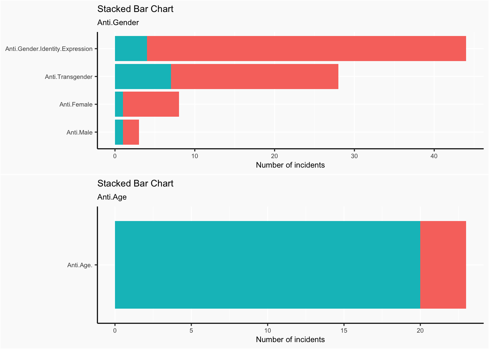
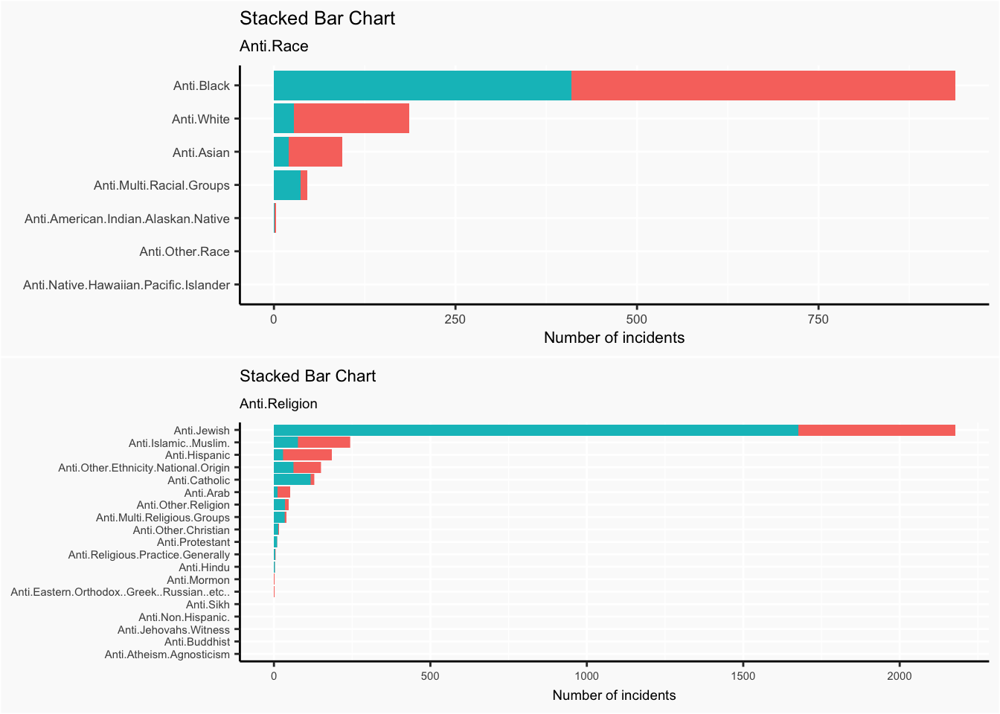
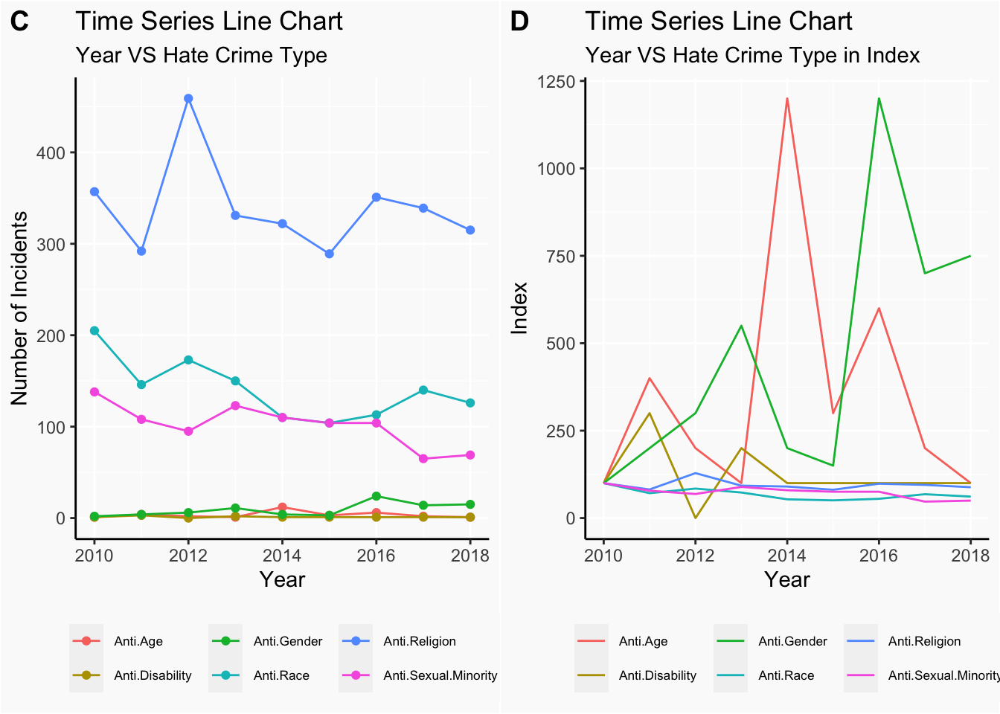

Chapter 5 Results
5.1 General Picture of Hate Crimes
How many hate crimes are taking place in NY state? Who are the people most affected? The stacked bar chart below provides us with a clear initial view.

Hate crimes are categorized into 6 categories: Anti.Religion, Anti.Race, Anti.Sexual.Minority, Anti.Gender, Anti.Disability and Anti.Age.
The methods of crime are further categorized into two types: crime against persons and property crimes.
The stacked bar chart gives us an overview of the relative frequency of each category of hate crimes happened in NY states from 2010 to 2018.
The most common type of hate crime is Anti.Religion, and more than half of this type were conducted against property.Then is the Anti.Race, Anti.Sexual.Minority, Anti.Gender and Anti.Disability. The least common type of hate crime is Anti.Age, and it is composed of almost crimes against property.
It is notable that unlike Anti.Religion hate crimes and Anti.Age hate crimes, crimes against persons are more common among other types of hate crimes. Anti.Sexual.Minority hate crimes have a particularly high value for the proportion of crimes against persons.
After having a general picture of frequencies of different types of hate crimes happened in NY state, we continue to dive in to look at frequencies of subcategories of each type of hate crimes.
We also use stacked bar chart here to not only indicate the counts of subcategories of Anti.Gender but also demonstrate their divisions in crimes against person or property. Similar code was applied to other types of hate crimes. Eventually, we gained 6 stacked bar charts.

What religions, races, gender.etc are most susceptible to hate crimes? We answer this question by investigating into each subtype of hate crimes.
Within the Anti.Gender group, hate crimes against gender identity expression are of the most frequent.There’s a very small number of hate crimes against male.
There are only less then 30 incidents of Anti.Age hate crimes during the 9 year period from 2010 to 2018, and about 83% are property crimes.
Within the Anti.Race category, vast majority of the hate crimes are against African Americans. It is notable that Anti.White hate crimes are ranked 2nd most frequent.
Within the Anti.Religion category, vast majority of the hate crimes are against Jewish, within which, vast majority are crimes against property, rather than against persons.
The number of total incidents of Anti.Disability crimes is also very small, with only one incident against property.
Anti.Gay.Male hate crimes are most common among the Anti.Sexual.Minority group, and the majority of these crimes are against persons.
5.2 Hate Crimes in Counties
After investigating the overall distribution of all kinds of hate crimes, we now consider the distribution of different types of hate crimes in different counties. That is, we want to know if for some certain type of hate crimes, the total number of incicents corresponding to it vary in counties or not. Also, it is worth checking whether the distribution in counties changes among various kinds of hate crimes. Here total number of incidents of some type of hate crimes includes the whole time period from 2010 to 2018 and both crime types which are person and property.
We draw heatmaps of total number of incidents in New York for different types of hate crimes.

Now we have six plots of heatmaps where each heatmap corresponds to a certain type of hate crimes.
First we can see that for Anti.Age, Anti.Gender and Anti.Disability, the maximum numbers of total incidents in each county are very small (less than 20), which means that these three types of hate crimes occur rarely in New York state. On the other hand, for Anti.Race, Anti.Religion, and Anti.Sexual.Minority, the maximum numbers of total incidents in each county are rather large (150, 800 and 200), which means these three types of hate crimes might occur more frequently in New York state compared to the other three types.
Next we examine each type of hate crimes in detail.
Regarding Anti.Age, almost every county has no incidents. There are only few counties with values around 3, and there are two counties which are located in the southeast corner of New York with values 6 and 12. (We can check in data that these counties are Queens and Suffolk)
Regarding Anti.Gender, more counties have values greater than 0 compared to Anti.Age, which means that the Anti.Gender type might occur more frequently in New York. There is a county called Erie in the west side of New York and a county called Bronx in the southeast of New York with values around 8, and some counties in the middle of New York have values around 4, and the very small county New York in the southeast corner of New York state has a maximum value greater than 15, which should be noticed. (The names of counties can be checked in data, it is the same for the following analysis.)
Regarding Anti.Race, almost every county has a value greater than 0. The county Erie in the west side of New York has the maximum value 150, and almost all counties in the southeast corner of New York have relatively large values.
Regarding Anti.Religion, almost all large values appear in the southeast corner of New York and most of the other counties have values around 0. A county called Kings in the southeast corner of New York has the maximum value 800. We can notice that values in all other counties are far less than 800.
Regarding Anti.Disability, the maximum value is just 3, which means this type occurs more rarely than Anti.Age and Anti.Gender. Almost every county has a value 0. Few counties in the west side of New York and some counties in the southeast of New york have values other than 0.
Regarding Anti.Sexual.Minority, a few counties have values other than 0. We can see that New York county and Kings which are in the southeast side of New York have maximum values 250. And almost all other large values appear in the southeast corner. The county Erie also has a relatively large value.
In conclusion, for a certain type of hate crimes, the total number of incicents corresponding to it vary in counties. Also, the distribution in counties changes among various kinds of hate crimes. We have to pay attention to two areas: one is the county Erie in the west side of New York and the other one is the southeast corner of New York, as these two areas have many large values for more than one type of hate crimes.
We also annotate the location of New York city with text ‘NYC’ on six plots. We know that New York city is located in the southeast corner of New York state, a place we have to pay attention to. It’s notable that compared to other regions in New York state, New York city tends to have more incidents of all types of hate crimes. This is probably due to the significantly large and diverse population residing in the New York city than in other regions. For us, Columbia students, we should be careful with these possible dangerous situations and pay more attention to surroundings.
There is a point that some counties in the heatmaps don’t have any value (or color). In the Missing Value chapter, we know these counties are Wyoming county and Yates county.
5.3 Hate Crimes across Time
After examing the distributions of hate crimes in different counties, we know take time factor into consideration. In other words, we want to see if total incidents of each type of hate crimes vary cross time. And what’s more, we aim to integrate both county and time factors into the inspection of distribution of hate crimes in New York State.
First, we looked at the time trend of two types of crimes in the NY state. In order to draw the line chart, we calculated the number of two crime types in different years, without considering the counties and hate crime types. In addition, we also found out an index, which equals to the counts at each year divided by the counts at first year. By doing so, we are able to analyze the relative changes cross years and their overall time trend.
In the A plot, year versus the number of incidents of each crime type, it’s obvious to see that in 2010, the number of crime against persons is much higher than the number of crime against property. And as time goes on, the number of crime against persons starts to decrease and reaches its minimum in 2018, while the number of crime against property contains more flutuation. Number of crime against property reaches its maximum in 2012 and then begins to go down until 2015. In recent years, its number shows an increasing tendency.
In the B plot, we can see the time trend of two crime types in a clearer way as two lines are seperated due to the use of index. Similar conclusion is drawn as A plot: number of crime against persons is decreasing while the number of crime against property is going up with some cyclical trends. What’s new in this plot is that we are able to see the relative changes compared with 2010, not in an aboslute means as we did in A plot.

Next, let’s move on to exmaine on the time trend of hate crime types in NY state. Similar preprocessing procedure was done with the target data like the way we transformed in the crime type case.
From the C plot, we can say that Anti.Religion is the most common hate crime type from 2010 to 2018. It reaches its maximum in 2012 and for other years, it remains approximately at the same level. Anti.Race is the second common type of hate crime in these years and it indicates an overall decreasing trend. Then, it’s the Anti.Sexual.Minority, which also demonstrates a general lowering tendency across years. In 2015 and 2016, its number comes to same level as the number of Anti.Race. For the rest of three type of hate crimes: Anti.Gender, Anti.Disability and Anti.Age, they stay at similar level from 2010 and 2018, roughly around 0 to 10. Anti.Gender reaches its highest point in 2016.
Interestingly, D plot provides much more information about the time trend. Due to the small cases of certain type of hate crimes, some changes across years are hard to view in the C plot, while D plot ‘exaggerates’ those changes by using the relative change compared with numbers in 2010, especially the Anti.Age and Anti.Gender. From C plot, it’s difficult to view any fluctuations in Anti.Age and Anti.Gender across years. But, in D plot, we are able to view the obvious fluctuations in those two types. Specifically, for Anti.Age, it increases first, then goes down, then goes up to significanly high level, reaching its maximum in 2014, later drops a little and increases to the second highest point in 2016. And for Anti.Gender, it goes up for three years, decreases in next two years and then shows a significantly sharp increase from 2015 to 2016.
Seeing the sharp increase in Anti.Age and Anti.Gender at a particular year, we are curious about which subtype of these two types causes such increase. As Anti.Age doesn’t have any subgroups, we focus on the subgroups of Anti.Gender.

In order to see, we draw the time series line chart of years for subgroups of Anti.Gender. From the plot, we discover that the sharp increase in 2016 is largely caused by the sharp increase in Anti.Gender.Indentity.Expression in 2016.
After investigating the time impact on the distribution of crimes types and hate crime types, we also want to incorporate county factor into the consideration. In particular,we want to see if location matters in the changes of numbers of incidents happened in these eight years.
Same as before, we first did some transformation of data. Specifically, we find the total number of incidents of each county in 2010 and 2018 and then calculated the change percentage of each county. Because some counties don’t have any incidents in both 2010 and 2018, they show NaN in the final change_prop, which we considered as 0, indicating that their numbers of incidents stay at the same level.
To visualize our result, we draw a county map, showing shift in proportion at each county. From the colored map, we noticed that all the counties show some degree of decrease in the total number of incidents. That’s why the scale of shift in proportion ranges from 0 to -1.
Furthermore, we discovered that there are almost no great gaps in the filled color of each county, except the one locates around -75 longitude and 43 latitude. In other words, counties with large shift tend to connect with each other in at least one direction. Similar for counties with small shift.Such result seems plausible because people are moving between close counties. When one county starts to make some improvements on hate crimes, such as using education to decrease discrimination and increasing police force, its actions not only reduce the number of incidents in its area but also bring positive changes to its neighborhoods.
Also, it’s easy to see that counties with relatively large shift locates at 43 latitude or at 74 longitude.Thus, from what we got, we may infer that location is associated with the shift of numbers of incidents from 2010 to 2018.
Finally, we also annotated the location of NYC in the heatmap as we did in the question 2. We can see that from 2010 to 2018, the number of total incidents in NYC and its surrouding areas goes down significantly. As columbia students, we are glad to see such changes as it’s safer than before. We are thankful to everyone who works to relieve the hate, misconcept and discrimination in this city. And more importantly, we understand this problem requires all of us to actively engage. Although we cannot stop the hate crimes like what the police do, we are able to use our knowledge as the weapon to stop the spread of bias, thus helping to build a better society.